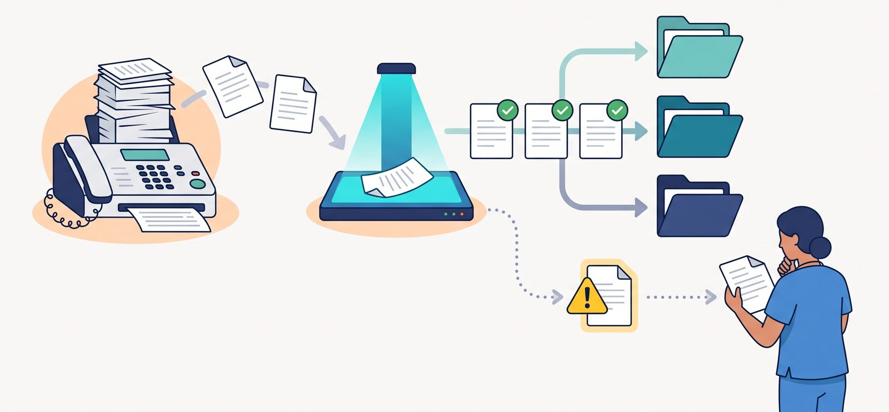

背景 — なぜ作ったか
在宅医療の現場では、病院・薬局・施設からの連絡手段としていまだにFAXが主流です。おひさま会では5つのクリニックで月約5,000枚のFAXや郵送物を受け取っています。
以前はすべて事務スタッフが手作業で処理していました。1枚のFAXを処理するのに「どの患者さん宛か調べる → 書類の種類を判断する → カルテに登録する」まで1枚あたり3〜5分。単純計算で月間に数百時間もの事務作業が、紙の仕分けだけに費やされていました。
さらに厄介なのは、健康管理一覧表のように1枚のFAXに複数の患者さんの情報が含まれているケースです。手作業での確認では、忙しい日の見落としや誤登録のリスクが常にありました。
導入前の課題
- 月約5,000枚のFAXを事務スタッフが手作業で仕分け
- 月約5,000枚 × 1枚あたり3〜5分 = 月間250〜400時間の事務作業（概算）
- 急ぎの日や枚数が多い日の、見落とし・取り違えリスク
- 1枚に複数患者が含まれる書類の分離・確認の負担
処理フロー

仕分けの流れ（イメージ図）。迷うものは人が確認しますFAXが届く（拠点ごとに自動受信・監視）
▼
AIが書類の中身を読み取る「誰の」「何の書類か」を一次判定
▼
複数患者や異なる書類が混ざっていれば自動で分割
▼
患者データベースと照合して本人を特定
▼
確信度を判定迷うものは「要確認」として人に回す
▼
確信度が高いものは電子カルテへ貼付仕組みが進める。止める道は要確認側に残す
導入効果
1枚3〜5分の手作業が、約5秒の下ごしらえに。宛先調べと書類分類を仕組みが引き受け、人は要確認に目を向けられます。
迷うものは、人が見る側へ倒す。確信度が低いものは「要確認」へ。自信が高いものだけ先に進みます。
処理費用 約0.1円/枚 の低コスト運用。月約5,000枚を処理しても月に約500円。費用面でも無理なく継続できる仕組みです。
「FAXの仕分けに追われていた事務スタッフが、患者さんやご家族への対応に時間を充てられるようになった」— これがこの仕組みの本当の価値です。
関連ページ
この仕組みについて相談する
おひさま会が自院で内製し、運用している実例をもとに、考え方や進め方をお伝えします。まずは手順書を読むだけでも構いません。
導入を相談する手順書を読む